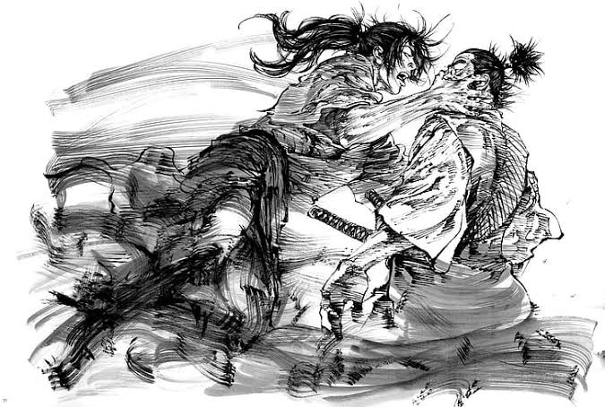

Yetişkinlerin Okunmasını Tavsiye Ettiğimiz 10 Manga Serisi
Manga sektörü tüm dünyadaki çizgi roman sektörü ele alındığında en büyük pazar ve giderek büyümeye devam ediyor. Amerikan çizgi roman sektörü her ne kadar bu sinematik evren furyasıyla çok daha popüler ve büyükmüş gibi görünse de işin basılı tarafı böyle değil. Bu yazıda ölmeden önce herkesin deneyim etmesini düşündüğüm 10 mangayı ele alacağım.
Kozure Ookami
Kozure Ookami, manga sanat dalının verdiği en elit ve çarpıcı örneklerden bir tanesidir. Eski Japonya’nın Tokugawa döneminde geçen hikaye hain olarak adlandırılan samuray Ogami Itto ve küçücük oğlunun intikam yolunu anlatır. Edebiyat(evet edebiyat) tarihindeki en ikonik intikam hikayelerinden biridir. Öyle ki en önemli çizgi roman sanatçılarından biri olan Frank Miller bile bu eserden çok büyük miktarda etkilenmiştir.
Kaze no Tani no Nausica
Hayao Miyazaki hepimizin bildiği kadarıyla eşsiz bir insan ve yine aynı şekilde eşsiz bir sanatçı. Anime ve Mangayla ilgili olsun olmasın, pek çok kişi kendisini yaptığı eşsiz filmlerle tanıdı ve özdeştirdi. Ancak benim nazarımda kendisinin en büyük ve önemli eseri Kaze no Tani no Nausica’nın ta kendisidir. Miyazaki’nin yapmış olduğu ilk önemli filme de kaynak olmuş bu eser, benim nazarımda çizgi roman sanatının en önemli, dikkate değer ve saygın eserlerinden bir tanesidir. Günümüzde kıyamet sonrası dünya konseptine dair bir çok yapıt var ancak hiç biri Nausica kadar anlamlı, içten ve ilham alınası değil. Günümüzde kendimizin ve sistemin gezegenimizi götürdüğü iklim problemleriyle türümüzün kapısını çalmaya başlayan sona karşı Nausica, Miyazaki’nin kibrinden gerçekleri göremeyen insan oğluna verdiği bir öğüttür.
Vinland Saga
Thorfinn Karlsefni isimli İzlanda’lı kaşifin destanını konu alır mangamız. Okuduğum en başarılı manga olup olmadığı hakkında kafamı kurcalayan mangadır Vinland Saga. Bu hikaye benim kafamda, Vikingler tarafından ölüme karşı yazılmış bir şiirdir, bir yapıttır. Mutlaka herkesin okuması gerektiğini düşündüğüm, nefes kesici savaş ve çizimlere sahip bir hikaye. Vikinglerin, Britanya fethinde geçen hikayemiz ana karakterimiz Thorfin’in intikam ateşiyle başlıyor. Bu yolda Thorfinn eline aldığı kılıcıyla neler yapacak? Gelin sizde onun öyküsüne ortak olun.
Vagabond
Vagabond, Takehiko Inoue’nin Slam Dunk’un ardından giriştiği bir diğer efsanevi serisidir. Çizim olarak rakipsiz gördüğüm mangalardan biri. Belki de en iyisi. Miyamato Musashi ve Sasaki Kojiro adlı iki ünlü samurayın yollarının birbirleriyle kaçınılmaz kesişmesini konu alan manga, hikayesiyle nefesleri kesiyor. Samuraylığın felsefesi ve dönemin Japonya’sının toplumsal durumunu en iyi şekilde okura sunuluyor. Ciddi bir akademik araştırma sonucu, doğru bir hikayenin izdüşümü olduğunu rahatlıkla söyleyebiliriz. Bizzat yenilmez samuray Musashi tarafından yazılan 5 Çemberin Kitabı isimli felsefi metin Manga sanatçısı tarafından iyi anlaşılmış. Tıpkı Musashi'nin kendisi gibi harika bir fırça uzmanı.
Akira
Hem anime filmi hemde manga serisiyle Katsuhiro Otomo’nun nasıl bir dahi olduğunu gözler önüne seren Akira, Ghost in the Shell ile birlikte Japonların yaptığı en önemli bilim kurgu eseri. Anime filmi çok güzel animasyonlarıyla zamansız bir baş yapıt olsa da kısa süresiyle birlikte hikayeyi güzel bir şekilde vermediğini düşünüyorum. Manga ise tam paket bir cyberpunk ve kıyamet sonrası klasiği.
Monster
Benim en sevdiğim manga sanatçılarından biri olan Naoki Urasawa’nın en iddialı eseri Monster. Berlin duvarının yıkılması ardından birleşmiş olan Almanya da geçen suç ve psikoloji serisi. Sahip olduğu karanlık ve kasvetli havasıyla bir o kadar da insancıl bir hikaye. Etik, sosyal yapı, adalet intikam gibi konular Urasawa’nın gizem ve sembolizm içeren anlatımıyla bir başyapıt ortaya çıkarıyor. Sonu gelmez bir gizemin peşinde, ana karakterimiz Doktor Tenma’nın hikayesine ortak oluyoruz. Gerilimin doruklara ulaştığı bu mangada, Tenma’nın sorularına cevap arayışında eşlik etmek istiyorsanız, kendinize bir koltuk kapın ve derhal okumaya başlayın.

Berserk
Guts ve onun ünlü dinmek bilmeyen öfkesi 1989 yılından beri soluksuz devam ediyor. Japon çizgi roman sektörünün ortaya koyduğu belki de en etkili ve ünlü kara fantezi klasiği Berserk. Kentaro Miura’nın epik çizimleri, yarattığı tehditkar kötücül dünya, felsefesi bırakın diğer mangaları bugün Dark Souls gibi oyunlara bile ilham olmaya devam etmekte. Karanlığın ve fantezinin mükemmel bir birleşimi. Çizimleriyle de sizi olduğunuz yerden alıp götürmekte. Ne söyleyebiliriz ki daha fazla? Kim bilir kaç tane nesilin en sevdiği hikaye olduğu belli olmayan, yaşayan bir efsane Berserk.
20th Century Boys
Naoki Urasawa’nın bir diğer büyük mangası olan 20th Century Boys karşılaşabileceğiniz en orijinal polisiye ve gizem hikayelerinden biri. Ve sadece bununla sınırlı kalmıyor distopya, bilim kurgu, fütürizm, distopi, fantezi gibi pek çok janraya da sıçrıyor. Gücünü nostaljiden modernizmin büyülediği hayalperest 20. yüzyıl çocuklarından alıyor. Kesinlikle okunması gereken bir eser.
Mushishi
Mushishi tanımlaması oldukça zor bir seri. Benim zihnimde Mushishi, iyi ve kötünün ötesinde sükutun sesini duyup kendiniz ve yaşam hakkında bir şeyler bulabileceğiniz ruhani bir seyahat. Yuki Urushibara eşsiz ve saygı duyulası bir eser ortaya koymuş. Ginko isimli gezgin bir uzman ve seyahat ettiği yerlerde karşılaştığı mushi isimli ruhani varlıklara karşı yardım ettiği insanları konu alıyor. Doğa ve tabiatı fantastik bir dille ele alıp, harika bir sanat ortaya çıkarıyor. Söylenebilecek çok şey yok. Mangaya niye sanat dendiğini anlatan en nadide eserlerden birisi.
My Girl
Trajik bir hikayeyle başlayan manga bize, başlangıcının tam tersi istikamette bir öykü sunuyor. Birbirlerinden hiç haberdar olmamış 23 yaşındaki baba ve onun beş yaşındaki kızının mutluluklar saçan hikayesini işliyor mangamız. Koharu ve Masamune, dramatik buluşmalarının ardından birbirlerini yavaş yavaş tanımaya ve zorlukları birlikte aşmaya çabalamaktadırlar. Söylenecek çok şey yok zaten. Yumeka Sumomo sensei’n bu yapıtı dahil olmak üzere iki serisine yer verdik listemizde. Hikaye anlatımı, çizimleri ve insanın içinde bıraktırdığı hisler çok zor bulunan şeylerdir.
Önerilen Yazılar
-

Using Repetition and Patterns in Photography.
-

Health Benefits Of Morning Dew.
-

The Art Of Visual Storytelling.